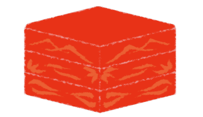

春花の故郷
駅周辺には久しぶりに来た。ここも桜がきれいに咲いている。
「せんぱーい！」
50メートル向こうのバス停に小さな人影。
大きなカバンを持った小さな五島が走ってきた。
50メートル向こうのバス停に小さな人影。
大きなカバンを持った小さな五島が走ってきた。

「古郡先輩！ お弁当ってどんなのですか！？ しっかりお腹すかせてきましたよ！
どうやってお弁当を攻略するか、色々作戦立ててきたんですから！」

「おいおい、いきなり弁当の心配かよ……。
なつみから腹7分目にしてから来いって指令があっただろ？」

「えー？ そうでしたかー？
気のせいじゃないですかー？ 多分私には来てないですよー」

「すぐバレることをしらばっくれやがって……。
そんなことより、あんまり時間ないぞ。早くホームへ行こうぜ！」

ここから荒田集落へ行くには、3回電車を乗り継いで、車で山道を30分走らなければならない。
そこそこの長旅だが、3人なら退屈しないだろう。
17時には荒田集落に到着できるだろうか。
そこそこの長旅だが、3人なら退屈しないだろう。
17時には荒田集落に到着できるだろうか。
「ねえねえ五島、さっき春花と話してたんだけど、ゴールデンウィークに3人でどこか出かけない？」
「おお！ ゴールデンウィーク！
うーん、もしかしたら家族旅行が入るかもです。何やらお父さんたちが色々と準備をしている気配がひしひしと……」
「あ、そうなんだ……」
「あ、そうなんだ……」
「でも、別にゴールデンウィークにこだわることもないんじゃないですか？
土日で1泊旅行でも楽しいと思いますよ！」
「そうか、考えてみればそうだよね！」
「土日で1泊かあ。どこがいいかなあ」
「じゃあ、その作戦も考えながら、荒田集落へ参りましょう！」
「じゃあ、その作戦も考えながら、荒田集落へ参りましょう！」
"間もなく、女ケ沢行きの特急電車が参ります。"
最初に乗る電車が近づいているようだ。
1度飯沢県の女ケ沢まで行き、そこから各駅電車で北上するのだ。
さあ、私たちの旅行前哨戦、始まり始まり！
最初に乗る電車が近づいているようだ。
1度飯沢県の女ケ沢まで行き、そこから各駅電車で北上するのだ。
さあ、私たちの旅行前哨戦、始まり始まり！
駅周辺には久しぶりに来た。
ここも桜がきれいに咲いている。
待ち合わせの場所に五島の姿はまだない。
ここも桜がきれいに咲いている。
待ち合わせの場所に五島の姿はまだない。

「五島はまだか……」
「春花、時間は大丈夫？」
「春花、時間は大丈夫？」
「あと15分で出発だ。これに乗れなかったら、荒田に着くのだいぶ遅くなるぞ……」
「五島に限って遅刻ってことはないだろうけどね……」
その時、春花のスマホが鳴った。
「五島に限って遅刻ってことはないだろうけどね……」
その時、春花のスマホが鳴った。

「五島、まだ着かないのか？」
電話の相手は五島のようだ。
と、五島の大声がこちらにも聞こえてきた。
電話の相手は五島のようだ。
と、五島の大声がこちらにも聞こえてきた。
「先輩ごめんなさーい！ ぼーっとしてたらこんな時間に……！
あと20分で着きますからー！」
「おいおい、それじゃ電車乗れないぞ……」
「私を置いて行ってくださーい！ 後はお頼み申します……！」
「おいおい、それじゃ電車乗れないぞ……」
「私を置いて行ってくださーい！ 後はお頼み申します……！」
「なつみ……どうする？」
「待ってあげようよ……遅くなっても仕方ないよ」
「待ってあげようよ……遅くなっても仕方ないよ」
「おい五島！ なつみに感謝しろよ！ 大天使なつみ様が五島を待ってくれるってよ！」
「ふえーん古郡せんぱーい！ この天才少女五島絵梨奈、一生ついて行きまーす！」
「バカなこと言ってないでとっとと来いよ！ 次の電車に乗れなかったら、今日荒田に着けないからな！」
「ふえーん古郡せんぱーい！ この天才少女五島絵梨奈、一生ついて行きまーす！」
「バカなこと言ってないでとっとと来いよ！ 次の電車に乗れなかったら、今日荒田に着けないからな！」

「ったく……」
「でも五島がぼーっとして遅刻なんて、珍しいよね？ 何かあったのかな……」
「まあ、それは五島が来たらじっくりと尋問してやろうぜ」
春花はちょっと不気味な笑顔を見せた。
「でも五島がぼーっとして遅刻なんて、珍しいよね？ 何かあったのかな……」
「まあ、それは五島が来たらじっくりと尋問してやろうぜ」
春花はちょっと不気味な笑顔を見せた。

昨日は始業式、今日は入学式で、いずれも午前で学校が終わりだ。
春休みボケを治すには、これくらいゆとりのある日程だと助かる。
春休みボケを治すには、これくらいゆとりのある日程だと助かる。
しかし私たちにはこれから、そんな春休みボケを吹き飛ばすほどの大事な用があるのだ。

「じゃあな五島、遅れずに来いよ！」

「承知！ 天才少女五島絵梨奈、作戦成功に向けてひた走ります！」
五島がびしっと敬礼した。
五島がびしっと敬礼した。
「電車何時だっけ？」
「12時40分だな。あんまりのんびりしていられないぞ。遅れたら、今日中に荒田に着けないからな」
明日は春花のお父さんの十三回忌だ。
今回特別に、部外者である私たちの参列が許されたのだ。
私を助けようとして亡くなった春花のお父さんに、やっと手を合わせられる。
喜んじゃいけないのかもしれないけど、やっぱりそれが嬉しい。
「12時40分だな。あんまりのんびりしていられないぞ。遅れたら、今日中に荒田に着けないからな」
明日は春花のお父さんの十三回忌だ。
今回特別に、部外者である私たちの参列が許されたのだ。
私を助けようとして亡くなった春花のお父さんに、やっと手を合わせられる。
喜んじゃいけないのかもしれないけど、やっぱりそれが嬉しい。

「じゃあ、12時にここで」
私と春花は生まれた時からの幼なじみ、10年前からずっとお隣さんだ。
その前の2年間だけ色々あって離れてたけど、また春花が元木町に戻ってきてくれた。
しかし、なぜ春花が戻ってきたのかはぼんやりしている。
その前の2年間だけ色々あって離れてたけど、また春花が元木町に戻ってきてくれた。
しかし、なぜ春花が戻ってきたのかはぼんやりしている。
確か春花のお父さんが亡くなって、おばさんの療養のために女ケ沢に行って、元気になったから戻ってきた、だったかな？

「ただいまー！ お母さん、昼ごはん早く！」

「お、帰ったか」
「あれ？ 仕事は？ サボり？」
「ちょ、サボりって何だよ……。 昨日お前が会社に行くなって言ったんだろ？ 午後から行けって……」
「あれ？ 仕事は？ サボり？」
「ちょ、サボりって何だよ……。 昨日お前が会社に行くなって言ったんだろ？ 午後から行けって……」
「ああ！ そうだったそうだった！」
そう言えば昨日、春花のお父さんの声がして、午前中お父さんは家にいるように言ったんだっけ。
そう言えば昨日、春花のお父さんの声がして、午前中お父さんは家にいるように言ったんだっけ。
「お母さんが、そこに昼ごはん置いて行ったぞ」


台所には、巨大な重箱が3つも重なっていた。
「えっと……こんなに食べられないよ……？」
「えっと……こんなに食べられないよ……？」
「なつみが遅れて帰ってきてもいいようにってな。
弁当にしたら持って行けるし、3人で食べられるだろ？
その弁当箱は安物だし、食べ終わったら捨ててもいいぞ」
「なるほど、それなら楽だね！ で、お母さんは？」
「なるほど、それなら楽だね！ で、お母さんは？」
「そろそろ帰ってくると思うぞ。
法要に持っていく手土産買いに行ってる」
「そっか、お世話になるのに手ぶらはダメだよね」
と、ドアが開き、家の中の空気がかき混ざる感じ。
ちょうどお母さんが帰ってきたようだ。
「そっか、お世話になるのに手ぶらはダメだよね」
と、ドアが開き、家の中の空気がかき混ざる感じ。
ちょうどお母さんが帰ってきたようだ。

「お帰り、お母さん」
「ああなつみ、これ、お土産に持って行ってね」
「ああなつみ、これ、お土産に持って行ってね」
これまた巨大なお酒の箱を渡された。
「ちょっと荷物多いな……」

「何なら、駅まで乗せていくぞ？」
「ダメダメ！ 今日は家にいて！ タクシーで行くし、春花にも手伝ってもらうから。 あ！ 2人に昼ごはん食べないように言っておかないと！」
「ダメダメ！ 今日は家にいて！ タクシーで行くし、春花にも手伝ってもらうから。 あ！ 2人に昼ごはん食べないように言っておかないと！」
スマホを取り出しながら自室へ入る。


2人へのメッセージをしたためながら、荷物の最終チェックを行う。
――えっと、連絡よし、着替えよし、他もよし！
忘れ物はなさそうだ。
「なつみー！ タクシー来たわよー！」
「はーい！ すぐ行くー！」
荷物を抱えて自室を出た。
忘れ物はなさそうだ。
「なつみー！ タクシー来たわよー！」
「はーい！ すぐ行くー！」
荷物を抱えて自室を出た。

「じゃあお父さん、お母さん、行ってくるね！」
「気を付けてね！」
あいさつもそこそこに家を出た。
不意に吹いてきた風を全身に浴びる感覚がとても気持ちいい。
あ、そうだ！
不意に吹いてきた風を全身に浴びる感覚がとても気持ちいい。
あ、そうだ！
「お父さん！ そろそろお酒は控えてね！ おじさんがそう言ってるから！」
「あ、ああ……。くそ、あいつめ……」
お父さんは最近ちょっと飲み過ぎだ。
実はおじさんじゃなく、私からの警告だ。
まあ嘘も方便、家族の健康のためなんだから、許されるよね。
「あ、ああ……。くそ、あいつめ……」
お父さんは最近ちょっと飲み過ぎだ。
実はおじさんじゃなく、私からの警告だ。
まあ嘘も方便、家族の健康のためなんだから、許されるよね。
「春花ー！ タクシー来たよ！」
と言った瞬間、新村家のドアが開いた。
と言った瞬間、新村家のドアが開いた。
「ちょうどよかった！ そろそろかと思ってたぞ。
って、ずいぶん荷物多いな……」
「色々持たされちゃってね……」
「色々持たされちゃってね……」
「よし、これは私担当な！」
そう言って春花は手土産のお酒を持ってくれた。
そして春花は古郡家のドアノブに手をかける。
そう言って春花は手土産のお酒を持ってくれた。
そして春花は古郡家のドアノブに手をかける。
「おじさん、こんちわー！」
まだお父さんたちが玄関に立っていたようだ。
まだお父さんたちが玄関に立っていたようだ。
「ああ、気を付けてな。
そう言えば向こうの駅に着いてからどうするんだ？ だいぶ遠いんだろ？」
「お母さんが車で迎えに来てくれるって。 準備で忙しいから一足先に行ったけど、私たちが着くころには手が空くだろうってさ。 じゃあな！」
「お母さんが車で迎えに来てくれるって。 準備で忙しいから一足先に行ったけど、私たちが着くころには手が空くだろうってさ。 じゃあな！」
おばさんとは荒田集落最寄りの駅で合流予定だ。
おばさんは十三回忌の準備で一昨日から一足先に荒田集落に行っている。
おばさんは十三回忌の準備で一昨日から一足先に荒田集落に行っている。


「元木駅までお願いします！」
普段は自転車か自動車で移動するから、タクシーなんてめったに乗らない。
だからタクシーに乗った時点で、私たちのテンションは高まりつつある。
不謹慎なのは分かっているが、ちょっとした旅行気分だ。
普段は自転車か自動車で移動するから、タクシーなんてめったに乗らない。
だからタクシーに乗った時点で、私たちのテンションは高まりつつある。
不謹慎なのは分かっているが、ちょっとした旅行気分だ。
「ねえ春花、今度の連休、3人でどこか旅行行かない？」
「んー旅行かあ……。そう言えば3人だけで元木町から出たことなかったもんなあ。
ああ、でも……。私、今年受験生だからなあ。
お母さんが許してくれるかどうか……」
「ああ、そりゃ辛いっすね……。 だったら、受験シーズンが本格化する前に行ったらどうかな？」
「ああ、そりゃ辛いっすね……。 だったら、受験シーズンが本格化する前に行ったらどうかな？」
「だとしたらゴールデンウィークかな。でも、どこも混むんじゃないかなあ……。
っていうか、もう予約いっぱいじゃないか？」
「そっか、もう1ヶ月もないもんね。 だったら……隠れ家的宿を探すとか？」
「きっと考えることはみんな同じだぞ？ なんだかんだで、元木町の民宿とかになりそうな気がする……」
「そっか、もう1ヶ月もないもんね。 だったら……隠れ家的宿を探すとか？」
「きっと考えることはみんな同じだぞ？ なんだかんだで、元木町の民宿とかになりそうな気がする……」
「あは！ でもそれはそれで楽しそうじゃない？
五月なら元木町は観光客少ないし、私は3人で出かけられるならどこでもいいかな」
「まあな！ 私も異論はなし！」
「まあな！ 私も異論はなし！」
Read ✓ Next in this arc →